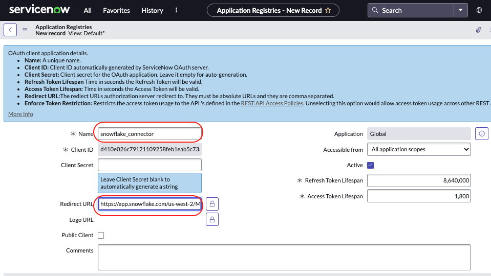
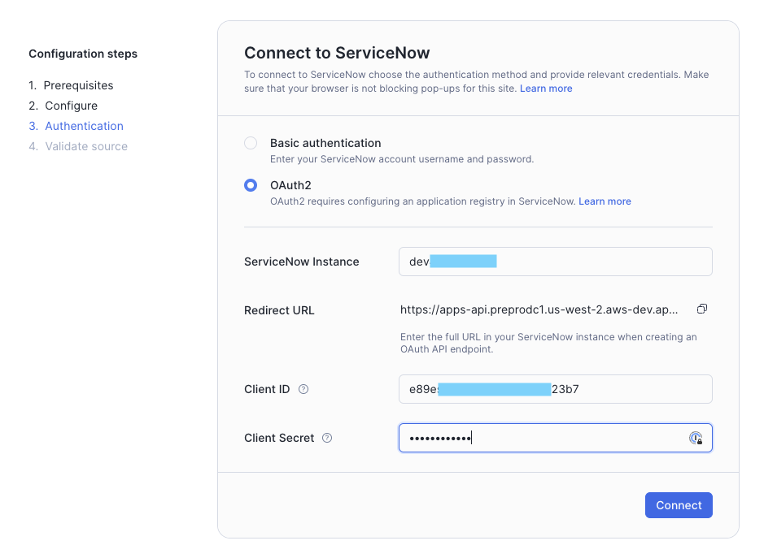
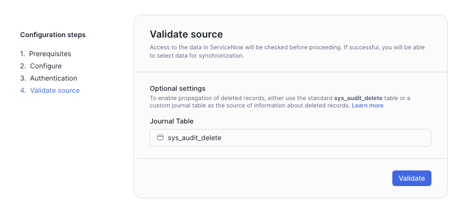

Use this quickstart lab to configure and understand the Snowflake Connector for ServiceNow® using the Snowsight wizard, select some tables, ingest data, and run an example query. This quickstart is not meant to be exhaustive. Please check the Snowflake Connector for ServiceNow® documentation for full functionality and limitations.

Prerequisites
- ServiceNow® account with administrator's rights.
- ORGADMIN rights to Accept the Terms of Service in the Snowflake Marketplace.
- ACCOUNTADMIN rights on the Snowflake account where you will install the connector.
What You'll Learn
- How to set up the Snowflake Connector for ServiceNow®.
- How to ingest ServiceNow® data into Snowflake
- How to stop the connector to avoid unnecessary costs in a development environment.
What You'll Need
- A Snowflake Account
- A ServiceNow developer account
What You'll Build
A ServiceNow® to Snowflake ingestion data flow.
If you do not want to test this connector on your ServiceNow® account, no problem, this step explains how to set up a developer instance!
- Go to the ServiceNow® developer website, and create a developer user.
- Log on to the developer website with your newly created user and select Create an Instance.
- Choose an instance type. You receive an email with your instance URL, and admin user and password.
Deployment is usually pretty quick, around five minutes. But, while you wait, let's go to the next step and configure Snowflake!
Create the Snowflake Account
If you do not have a Snowflake account, no problem, you can get a free trial at snowflake.com. Select Start for Free and follow the instructions.
Accept the Terms & Conditions
- Log on to your Snowflake account through the Snowsight web interface and change to the ORGADMIN role.
- Select "Admin -> Billing & Terms".
- In the "Snowflake Marketplace" section, review the Consumer Terms of Service.
- If you agree to the terms, select "Accept Terms & Conditions".
Set up a Virtual Warehouse
You'll need some compute for the connector installation process, so let's set up a virtual warehouse to do that.
Change to the ACCOUNTADMIN role.
- Navigate to Admin -> Warehouses and select + Warehouse.
- Name the virtual warehouse CONNECTOR_UI_WH, size XS, and, leaving the defaults, select Create Warehouse.
Install the ServiceNow® connector
The connector, the first of its kind to be deployed on Snowflake's Native App Framework, is delivered through the Snowflake Marketplace, and is available to all Snowflake customers instantly. Once chosen, it is installed into your account as an application with several views, and stored procedures.
- In the left menu select Data Products and then Marketplace.
- In the search window, enter ServiceNow and select the tile.
- Review the business needs and usage samples.
- Select Get.
- Select the warehouse you created above, CONNECTOR_UI_WH.
- Select Options.
- For this lab, leave the default name for the installation database, Snowflake_Connector_for_ServiceNow. Do not select any additional roles.
- Select Get. You receive the following message, Snowflake Connector for SeviceNow is now ready to use in your account.

- Select Done. We will manage it in the next section.
Let's check that the connector was installed. From Snowsight, go to Data Products -> Apps. You will see a new installed application with the name Snowflake_Connector_for_ServiceNow.

Take a look at its public schema in Data -> Databases to see what views and procedures are available.

Launch the Snowflake Connector for ServiceNow® from the Data Products -> Apps -> Snowflake Connector for ServiceNow. You will be presented the list of tasks that need to be done before you'll be able to start the ingestion of the data. Please read the descriptions carefully and complete them one by one.
One of the last steps asks you to create application registry if you want to use OAuth2 authentication. Let's focus on it for a while.
Please have two tabs in your browser open for the next part, as you will have to copy some data from Snowflake to ServiceNow®.
- From the Snowflake side, we want the connector to generate the redirect URL which we will paste into the Application Registry, and
- From the ServiceNow® side we want the Application Registry to provide the Client ID and secret, which we then paste into Snowflake.
On the Snowflake hand
- Copy the redirect URL. You will need it in the next section.
Now, open a new tab in your browser (without closing the above), and follow the steps in the next section.
On the ServiceNow® other hand
- Log on to your ServiceNow® developer instance.
- From the main page, select All and search Application Registry.

- Select New in the upper right-hand side of the window.
- Select Create an OAuth API endpoint for external clients.
- Give the endpoint a name, such as Snowflake_connector. Leave the client secret blank. This will autofill.
- Paste in the redirect URL that was generated on the Snowflake hand.

- Select Submit. The window closes.
- Select the registry you just created to re-open it.
- Note that the Client ID and Client secret are auto-generated.
- Don't close the ServiceNow® browser tab or store the Client ID and Client secret in some safe place, they will be needed later.
Now, time to jump back to the Snowflake configuration tab.
When all the preparation tasks are done, move to the next step by clicking Start configuration
This displays the Configure screen. By default, the fields are set to the names of objects that are created when you configure the connector. You can also provide names of existing objects.
The virtual warehouse that you need to choose now will be used by the connector for background data ingestion processes.

Check out Configuring the Snowflake Connector for ServiceNow® for more information on these fields.
Select Configure. It can take a few minutes for the configuration process to complete, and you will be moved to the next step.
- Select OAuth2 as an authentication method
- Fill in the ServiceNow® instance details. This is the first part of the ServiceNow® URL for your ServiceNow® account, without https:// protocol and the trailing service-now.com.
- Paste the Client id and the Client secret from ServiceNow® into the Snowflake wizard. 
- Select Connect. Your ServiceNow accounts pops up and requests to connect to Snowflake.

- Select Allow. The connection is established between the two systems.
To verify the connection, select the three dots [...] and View Details. At the top of the pop-up you will see the date ServiceNow Authenticated.

If you want not only inserts and updates, but also deletes to be synchronized to Snowflake, you have to provide name of the journal table. By default ServiceNow® uses sys_audit_delete table to store information about deleted records so feel free to provide this name. If you don't care about deletes, you can leave this field empty.

Select Validate to check if the connector is able to connect to the source system and has access to all the required tables. It can take a few minutes for the process to complete. When it's done, please select Define data to sync to select tables for the ingestion.
- In the Snowflake Connector for ServiceNow window, on the top bar, select Data Sync.
- To be able to run our test query later, we need to ingest a couple of tables. From the search window enter incident and check the box next to it and choose a 30 minute sync time.
- To choose other tables, clear the search, put the table name and select the checkbox. Do this at least for task table.

- Select Start Sync. The select windows closes and you get the message "Syncing Data" from the main Connector window. In addition to the tables you choose, three system tables will also be loaded. These are necessary to build the views on the raw data: sys_dictionary, sys_db_object, and sys_glide_object.

You receive a message indicating success. It appears once at least one table has been fully ingested.

Let's open a worksheet to check what's going on inside the connector. Here are some examples of SQL queries you can execute to get monitoring information:
// Get general information about all ingestions
SELECT * FROM SNOWFLAKE_CONNECTOR_FOR_SERVICENOW.public.connector_stats;
// Search for information about particular table ingestions
SELECT * FROM SNOWFLAKE_CONNECTOR_FOR_SERVICENOW.public.connector_stats WHERE table_name = '<table_name>';
// Check connector configuration
SELECT * FROM SNOWFLAKE_CONNECTOR_FOR_SERVICENOW.public.connector_configuration;
// Calculate ingested data volume
SELECT
table_name,
sum(ingested_rows) AS row_count
FROM SNOWFLAKE_CONNECTOR_FOR_SERVICENOW.public.connector_stats
GROUP BY table_name
ORDER BY table_name;
// General connector statistics
SELECT * FROM SNOWFLAKE_CONNECTOR_FOR_SERVICENOW.public.connector_overview;
The connector exposes an application role named DATA_READER. It has read access to all the ingested data in the destination schema. It's automatically granted to the role provided during the Configure step of the installation process. It was named SERVICE_NOW_RESOURCES_PROVIDER in the screenshot earlier in this guide. You can grant either application role or account role further if needed.
Check out the tables that the connector has created under the destination schema of the destination database. For each table in ServiceNow® that is configured for synchronization, the connector creates the following table and views:
- A table with the same name that contains the data in raw form, where each record is contained in a single VARIANT column.
- A view named table_name__view that contains the data in flattened form, where the view contains a column for each column in the original table and a row for each record that is present in the original table.
- A view named table_name__view_with_deleted that contains the same data as table_name__view as well as rows for records that have been deleted in ServiceNow®.
- A table table_name__event_log that contains the history of changes fetched by the connector from ServiceNow®.
To query from the raw data, check out Accessing the raw data. To query the views (recommended), check out Accessing the flattened data.
Use this query to identify number of incidents raised by month and priority
Here's a little test query for you to identify the number of incidents raised by month and priority. Other example queries are provided on the Snowflake Connector for ServiceNow® page in the Marketplace.
USE ROLE SERVICE_NOW_RESOURCES_PROVIDER;
USE DATABASE SERVICENOW_DEST_DB;
USE SCHEMA DEST_SCHEMA;
WITH T1 AS (
SELECT
DISTINCT
T.NUMBER AS TICKET_NUMBER,
T.SHORT_DESCRIPTION,
T.DESCRIPTION,
T.PRIORITY,
T.SYS_CREATED_ON AS CREATED_ON,
T.SYS_UPDATED_ON AS UPDATED_ON,
T.CLOSED_AT
FROM TASK__VIEW T
LEFT JOIN INCIDENT__VIEW I
ON I.SYS_ID = T.SYS_ID -- ADDITIONAL INCIDENT DETAIL
WHERE I.SYS_ID IS NOT NULL -- THIS CONDITION HELPS KEEP JUST THE INCIDENT TICKETS
)
SELECT
YEAR(CREATED_ON) AS YEAR_CREATED,
MONTH(CREATED_ON) AS MONTH_CREATED,
PRIORITY,
COUNT(DISTINCT TICKET_NUMBER) AS NUM_INCIDENTS
FROM T1
GROUP BY
YEAR_CREATED,
MONTH_CREATED,
PRIORITY
ORDER BY
YEAR_CREATED,
MONTH_CREATED,
PRIORITY
;
The connector exposes two more application roles except the one we used to access the data in destination database:
- The
VIEWERrole have read only access to the connector configuration and state - The
ADMINrole that can modify connector configuration and enable/disable ingestion If you would like to monitor errors, run stats, connector stats, enabled tables, you can set up a ServiceNow® monitoring role that allows access to the views and read only procedures in the connector database. For example, run the following in a worksheet (and then use the role):
USE ROLE accountadmin;
CREATE ROLE IF NOT EXISTS servicenow_monitor_role;
GRANT APPLICATION ROLE SNOWFLAKE_CONNECTOR_FOR_SERVICENOW.viewer TO ROLE servicenow_monitor_role;
GRANT USAGE ON WAREHOUSE SERVICENOW_WAREHOUSE TO ROLE servicenow_monitor_role;
During this lab, we're only ingesting the data, so it makes sense to stop the ingestion after that initial load. However, in an operational environment, you would keep it running.
- In Snowsight, select the Snowflake Connector for ServiceNow tile.
- In the Snowflake Connector for ServiceNow window, select Pause Connector.
If you completed the experiment or for any reason no longer need the connector you can easily uninstall it via the Snowflake Marketplace.
- Select Data Products and then Apps.
- Select three dots icon in the item on the list representing the connector app.
- Select Uninstall
- Decide if you want to delete the objects owned by the application (tables and views with ingested data in the destination schema) or transfer ownership of them to another role
- Select Uninstall

Congratulations! You've successfully installed and configured the Snowflake Connector for ServiceNow®, ingested data and ran a query to get some insights on incidents and priority!
What You Learned
- How to set up the Snowflake Connector for ServiceNow®
- How to ingest ServiceNow® data into Snowflake
- How to stop the connector to avoid unnecessary costs in a development environment.